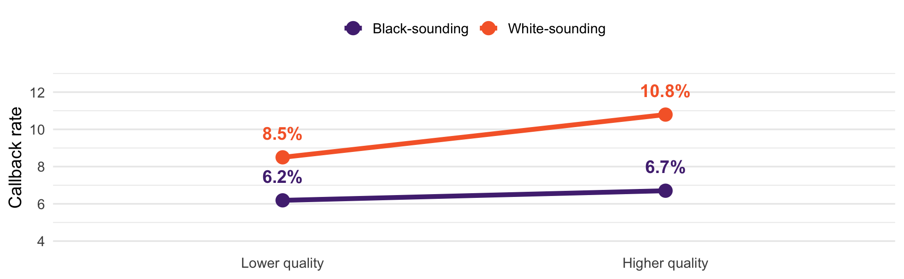
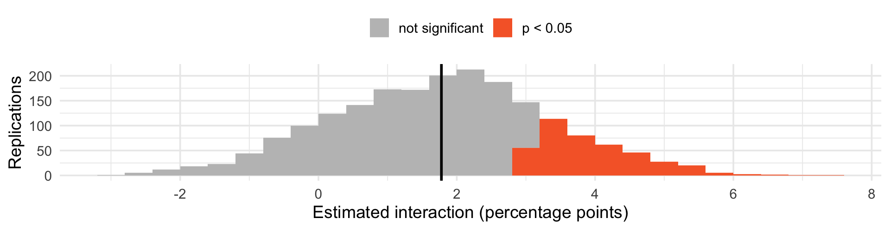
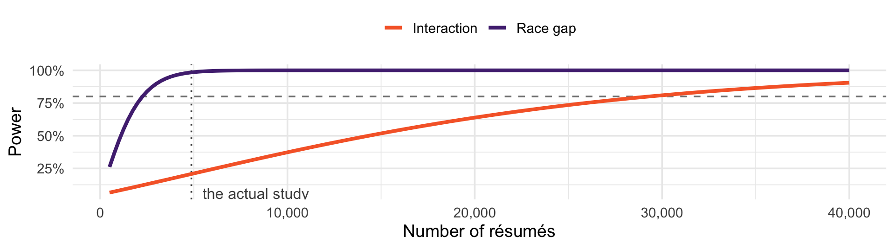
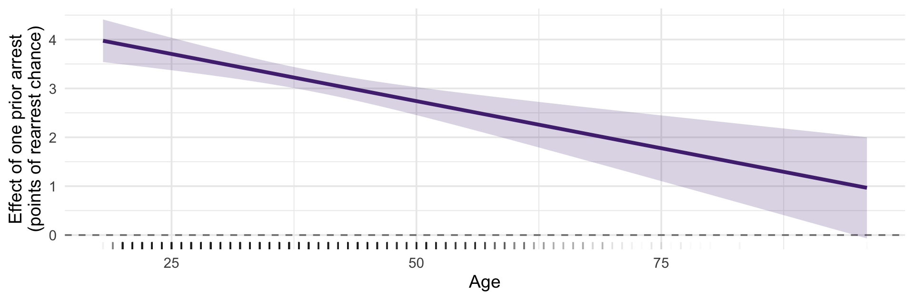
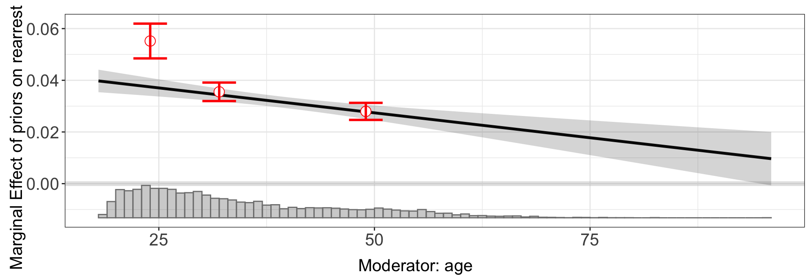
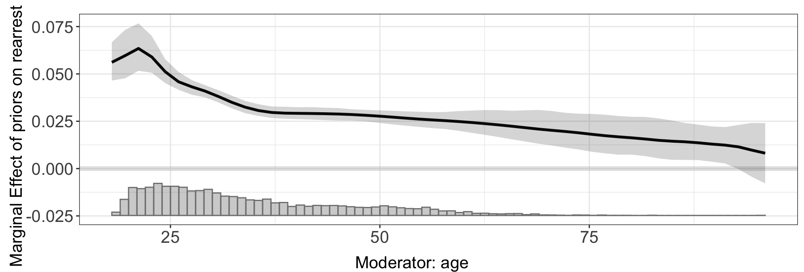

| Name | High quality | Low quality |
|---|---|---|
| afam | 6.70 | 6.19 |
| cauc | 10.79 | 8.50 |
When the effect of X depends on Z
On the first day of this course we looked at Bertrand and Mullainathan:
| Name | High quality | Low quality |
|---|---|---|
| afam | 6.70 | 6.19 |
| cauc | 10.79 | 8.50 |
A better résumé raised callbacks by 2.3 points for white-sounding names
And by 0.5 points for Black-sounding names
We said we would come back with the right tool.
\[Y = \beta_0 + \beta_1 X + \beta_2 Z + \beta_3 (X \times Z) + \varepsilon\]
Collect the \(X\) terms:
\[\frac{\partial Y}{\partial X} = \beta_1 + \beta_3 Z\]
The effect of \(X\) is now a function of \(Z\)
\(\beta_1\) is the effect of \(X\) when \(Z = 0\) — not “the” effect
\(\beta_3\) is how much that effect changes as \(Z\) goes up by one
\[\beta_3 = \frac{\partial^2 Y}{\partial X \, \partial Z}\]
Calculus again. The interaction is a second derivative: the rate at which one slope changes as the other variable moves.
It’s symmetric: \(\beta_3\) is also “how the effect of \(Z\) depends on \(X\).” The data cannot tell you which framing is the right one.
Estimate Std. Error t value Pr(>|t|)
(Intercept) 0.0619 0.0078 7.9329 0.0000
white 0.0231 0.0110 2.0942 0.0363
hq 0.0052 0.0110 0.4694 0.6388
white:hq 0.0178 0.0156 1.1423 0.2534white = 0.0231 - the race gap among low-quality résumés
hq = 0.0052 - the return to quality among Black-sounding names
white:hq = 0.0178 - how much larger the quality return is for white-sounding names
Black, low: \(0.0619\)
Black, high: \(0.0619 + 0.0052 = 0.0671\)
White, low: \(0.0619 + 0.0231 = 0.0850\)
White, high: \(0.0619 + 0.0231 + 0.0052 + 0.0178 = 0.1080\)
Look again at hq = 0.0052:
It is not “the effect of résumé quality”
It is the effect of quality when white = 0 - that is, among Black-sounding names only
With an interaction in the model, every constituent term is a conditional effect at zero of the other variable
If the other variable has no meaningful zero, like income, age, ideology score, the constituent term is describing something not in the data
Subtract the mean from each variable before interacting:
(Intercept) wc hqc wc:hqc
0.0805 0.0320 0.0141 0.0178 The interaction is identical: 0.0178 either way. Centering does not change it.
But white moved from 0.0231 to 0.0320: the average race gap across quality levels
And that 0.0320 is the coefficient from the model with no interaction at all
Centering only changes what “zero” means, and therefore what the constituent terms describe.

Non-parallel lines are what an interaction looks like. Parallel lines mean no interaction.
Estimate Std. Error t value Pr(>|t|)
0.0178 0.0156 1.1423 0.2534 \(\hat{\beta}_3 = 0.0178\), standard error \(0.0156\), \(t = 1.14\), \(p = 0.25\)
We cannot reject the null that the interaction is zero
The descriptive pattern is striking, but the formal test does not support it. Why?
The interaction is a difference between two differences
Each difference carries sampling error, and differencing them adds those errors
The interaction’s standard error is twice the main effect’s. Since precision scales with \(\sqrt{n}\), detecting an interaction of similar size needs roughly four times the sample.
Suppose the observed cell rates are the truth, so the interaction really is 1.8 points. Re-run the experiment 2,000 times:
set.seed(8410)
p_cell <- fitted(mi) # each résumé's true callback chance = its cell's observed rate
sims <- map_dfr(1:2000, function(r) {
cb_sim <- rbinom(nrow(resumes), 1, p_cell) # same résumés, fresh callbacks
co <- summary(lm(cb_sim ~ white * hq, data = resumes))$coefficients["white:hq", ]
tibble(est = co[1], sig = co[4] < 0.05)
})
ggplot(sims, aes(100 * est, fill = sig)) +
geom_histogram(binwidth = 0.4, boundary = 0) +
geom_vline(xintercept = 100 * coef(mi)["white:hq"], linewidth = 1) +
scale_fill_manual(values = c(`FALSE` = "grey75", `TRUE` = "#F66733"),
labels = c("not significant", "p < 0.05"), name = NULL) +
labs(x = "Estimated interaction (percentage points)", y = "Replications") +
theme_minimal(base_size = 14) +
theme(legend.position = "top")
Power is 21%: most replications miss an interaction that is really there
The significant ones average 2.2 times the truth: the exaggeration problem from earlier

With 4,870 résumés: 98% power for the race gap, 21% for the interaction
80% power for the interaction takes about 29,000 résumés, 6 times the study. Twice the standard error alone means four times the sample; the smaller effect does the rest
Interactions are chronically underpowered
A study sized to detect a main effect is usually not powered to detect moderation of it
So null interactions are weak evidence of homogeneity: absence of evidence, not evidence of absence
And the flip side: significant interactions in small samples are often noise.
Report the estimate and its interval: the difference in returns is 1.8 points, 95% CI roughly \(-1.3\) to \(4.8\)
State plainly that the data are consistent with anything from a small reverse pattern to a large one
Do not write “the effect was larger for white applicants”
Do not write “there was no difference” either
“Our point estimate suggests a larger return for white-sounding names, but the interaction is imprecisely estimated” is a more honest sentence.
The COMPAS defendants from earlier: does each prior arrest predict rearrest within two years equally at every age?
Estimate Std. Error t value
(Intercept) 0.63915 0.02000 31.95755
priors 0.04669 0.00374 12.48738
age -0.00864 0.00052 -16.66274
priors:age -0.00039 0.00009 -4.23644priors:age is negative and precise (\(t\) = -4.2): the older the defendant, the less a prior arrest predicts
One prior arrest adds 3.9 points to the chance of rearrest at age 20, but 2.4 at age 60
priors on its own is the effect at age 0: the constituent-term trap again

Each point on the line is \(\hat{\beta}_1 + \hat{\beta}_3 Z\) at that age, with its own 95% interval. The rug along the bottom shows each defendant’s age.
At age \(Z\) the marginal effect is \(\hat{\beta}_1 + \hat{\beta}_3 Z\) — a sum of two estimates
Its variance is \(\text{Var}(\hat{\beta}_1) + Z^2\,\text{Var}(\hat{\beta}_3) + 2Z\,\text{Cov}(\hat{\beta}_1, \hat{\beta}_3)\)
That covariance term is why you cannot eyeball it from a regression table. It is an off-diagonal entry of the matrix we derived earlier, \(\hat{\sigma}^2(\mathbf{X}'\mathbf{X})^{-1}\), which R stores as vcov():
Robust standard errors keep that same \((\mathbf{X}'\mathbf{X})^{-1}\) on both sides of a correction for unequal variances, like bread around a filling. That is why the package is called sandwich.
The Reading makes three demands that are routinely violated:
Include all the constituent terms. Fitting \(X \times Z\) without \(X\) and \(Z\) constrains the model in ways nobody intends. (R handle this by default)
Do not read significance off the interaction coefficient alone. The marginal effect can be significant where the interaction is not, and vice versa.
Plot the marginal effect with its confidence interval, across observed values of \(Z\).
\(\hat{\beta}_1 + \hat{\beta}_3 Z\) is a straight line in \(Z\). The plot we just drew could not have come out any other shape
So the model assumes the effect changes at a constant rate: a year of age matters as much at 20 as at 60
And it draws that line across all of \(Z\), including where there are almost no data
Hainmueller, Mummolo and Xu (2019) replicated 46 interactions from 22 top-journal articles: these two assumptions, linearity and common support, often fail. Their package interflex checks both.
Cut age into thirds, estimate the effect of priors separately within each, and compare with the line:

If the line were right, all three red estimates would sit on it
The middle and oldest thirds do: 3.6 and 2.8 points per prior arrest, against 3.4 and 2.8 on the line
The youngest third (ages 18 to 27) does not: 5.5 points, against 3.7 on the line
A Wald test of the line against the bins: \(p\) < 0.001
The interaction is real, but the line has the wrong shape. It understates how much a record predicts for the youngest defendants.
Estimate the effect at each age using mostly the defendants near that age, so the curve can bend:
set.seed(8410)
kern <- interflex(estimator = "kernel", data = compas,
Y = "two_year_recid", D = "priors", X = "age",
bw = 2.68, # interflex's cross-validated bandwidth, fixed here to save time
vcov.type = "robust", nboots = 200,
Ylabel = "rearrest", Dlabel = "priors", Xlabel = "age", theme.bw = TRUE)
kern$figure
One prior arrest adds about 6.3 points to the chance of rearrest at 21, 3.0 at 37, and 2.8 at 50
So the moderation happens almost entirely in the twenties. After the late thirties the effect barely moves
Past 60 the band balloons: only 3.2% of defendants are over 60, and 29 are over 70
That last point is common support. The straight line still reports an effect at 90, but that number comes from the model’s shape, not from 90-year-olds.
Plot the marginal effect with the moderator’s distribution underneath, and interpret it only where there are data
Run the binning check. If the bins fall off the line, be transparent
If the effect bends, let the model bend.
None of this rescues an underpowered interaction. Flexible estimators need more data, not less
Fit cb ~ white * city. Does the race gap differ between Boston and Chicago? Report the estimate and interval.
Double the true interaction in the power simulation (raise the white, high-quality cell by 1.8 points). What is the power now?
Re-run the binning check with nbins = 4. Does the youngest group still fall off the line?
A paper reports a significant interaction in a subgroup of 40 observations. What would you want to know before believing it?
Read: Gelman, Hill and Vehtari, Ch. 11 (remainder)
Next class: model fit and diagnostics — \(R^2\) and its limits, residual plots, and influential observations